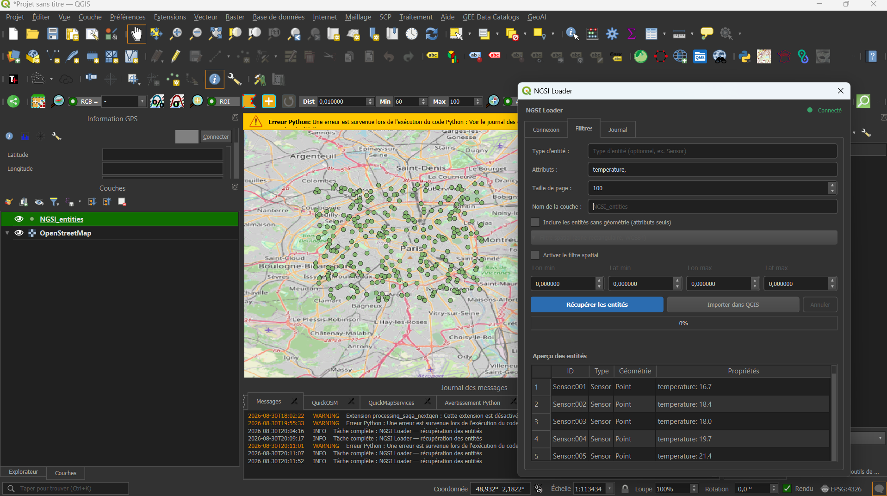

Développement d'outils SIG · Python · PyQGIS · Projet personnel, 2025
NGSI Loader
Plugin QGIS pour charger des entités NGSI v2 / NGSI-LD depuis n'importe quel Context Broker
Contexte et objectif
Les standards NGSI v2 et NGSI-LD (FIWARE) sont largement utilisés pour exposer des données IoT et à référence spatiale via des Context Brokers tels que Stellio, Orion-LD, Scorpio ou Orion. Pourtant, aucun outil simple ne permettait de charger directement ces entités dans QGIS sous forme de couche vectorielle exploitable. L'objectif de NGSI Loader est de combler ce manque : offrir aux utilisateurs de QGIS un moyen direct, sécurisé et générique de se connecter à un Context Broker et d'en visualiser les entités géolocalisées, sans étape intermédiaire d'export ou de conversion manuelle.

Démarche et outils
Le plugin est développé en Python avec PyQGIS et s'articule autour d'une architecture multi-brokers : chaque particularité de Stellio, Orion-LD ou Scorpio est isolée dans un adaptateur dédié derrière une interface commune, ce qui permet d'ajouter de nouveaux brokers sans toucher au cœur du plugin. Les profils de connexion (URL, type d'authentification, jeton) sont enregistrés et le jeton sensible est stocké via le gestionnaire d'authentification sécurisé de QGIS (QgsAuthManager) plutôt qu'en clair. Le chargement des données s'exécute en tâche de fond (QgsTask) pour ne pas geler l'interface, avec un parseur dédié au format NGSI-LD, des filtres par type d'entité, par attribut et par zone spatiale, puis une conversion générique vers GeoJSON pour affichage direct dans QGIS. Le plugin est couvert par une suite de tests automatisés (pytest) portant sur les adaptateurs de brokers, le parseur NGSI-LD, les filtres et la gestion des cas d'erreur.
Statut et téléchargement
NGSI Loader est une version de test (0.2.0), sous licence MIT, actuellement à la recherche de retours d'utilisateurs disposant d'un accès à un Context Broker réel pour valider les adaptateurs Stellio, Orion-LD et Scorpio face à de vraies instances. Le code source complet, la documentation d'installation et les tests sont inclus dans l'archive ci-dessous.
Télécharger le plugin (.zip)Installation dans QGIS
Une fois l'archive téléchargée, elle s'installe directement depuis QGIS, sans décompression manuelle :
- Dans QGIS, ouvrir le menu Extensions puis Installer/Gérer les extensions.
- Dans la fenêtre qui s'ouvre, aller sur l'onglet Installer depuis un ZIP.
- Cliquer sur le bouton « … » pour parcourir l'ordinateur et sélectionner le fichier
ngsi-loader.ziptéléchargé. - Cliquer sur Installer l'extension (confirmer l'avertissement de sécurité si QGIS le demande).
- Le plugin NGSI Loader apparaît alors dans le menu Extensions et est prêt à l'emploi.